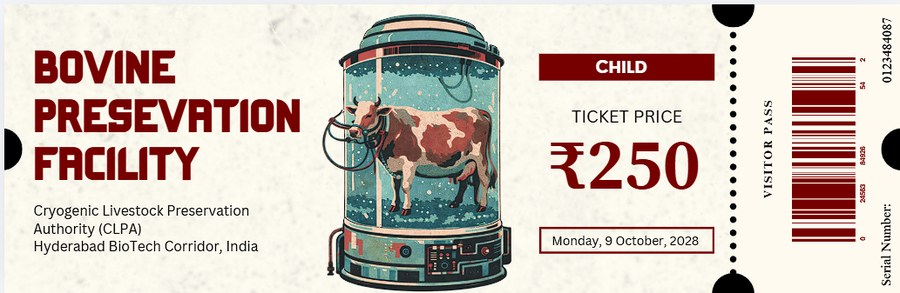
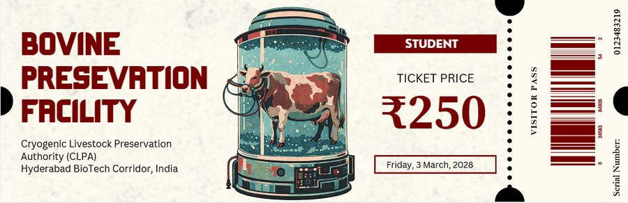
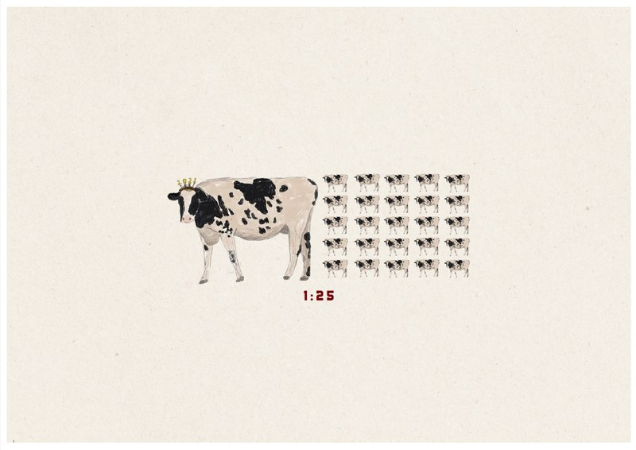
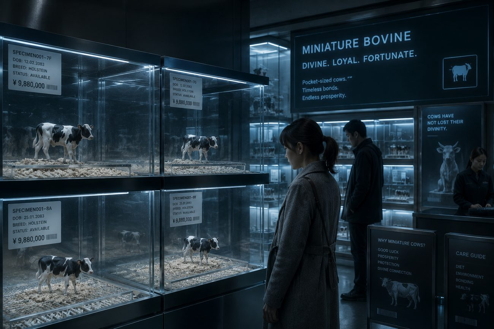

The premise
Engineered cattle, ecological loss, and milk reframed as a luxury artefact.

A speculative fiction about engineered cattle, ecological loss, and luxury preservation.
Engineered cattle, ecological loss, and milk reframed as a luxury artefact.
Speculative fiction and world building explore this imagined future.
Specimen001 asks what we choose to preserve, and what that preservation costs.
Specimen001 imagines a future where centuries of industrial breeding and genetic manipulation trigger a global mutation, shrinking all cattle into pocket-sized beings. With cows no longer viable for milk or meat production, the last original-sized cow is cryogenically preserved while its final batch of milk becomes one of the world’s most valuable commodities.
Through speculative artifacts including tickets, postcards, and institutional documents, the project examines how scarcity transforms everyday resources into symbols of power, luxury, and cultural memory.
Modern cattle are among the most heavily engineered animals on Earth. Through selective breeding, artificial insemination, and industrial farming, humans have continuously reshaped their bodies to maximize milk and meat production. Specimen001 extends this trajectory into a plausible speculative future, asking what might happen if prolonged human intervention resulted in an irreversible biological response.
The artifacts on this page are fragments from a larger speculative fiction. Read the full archive to enter the world of Specimen001, from the mutation of cattle populations to the final milking ceremony and the preservation of the last original-sized cow.
Read the Fiction →Artifact 01 — Ticket Series




Entry tickets for the fictional Bovine Preservation Facility, showing how preservation becomes a paid public spectacle.
Artifact 02 — Postcard Card


A postcard from the fictional preservation facility, combining visitor-world branding with a scale comparison of original-sized cattle and miniature cows. It turns the last cow into cultural memory, tourism, and institutional evidence.
In this future, cows no longer occupy fields but display cases. Once valued for their productivity, they are now protected for their rarity. Natural milk has become a luxury reserved for the wealthy, while synthetic substitutes sustain the global population. The last original-sized cow exists as both scientific infrastructure and cultural icon, preserved indefinitely as society attempts to safeguard what it spent centuries reshaping.

